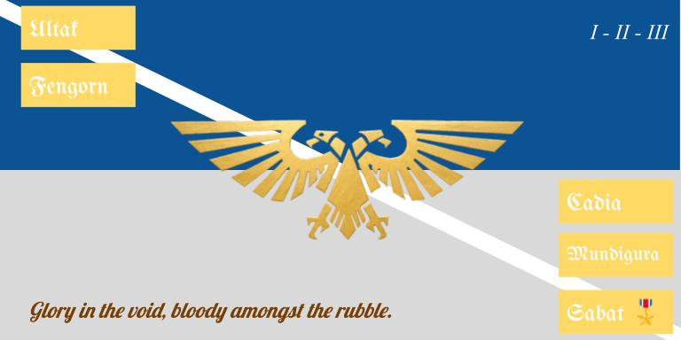
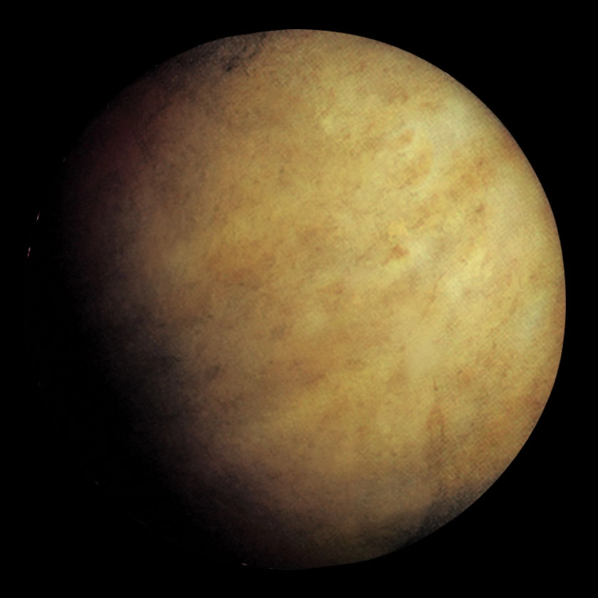
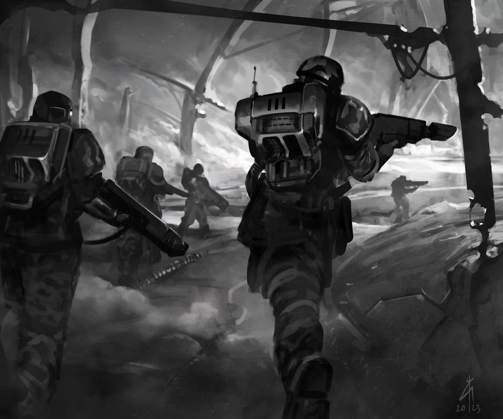
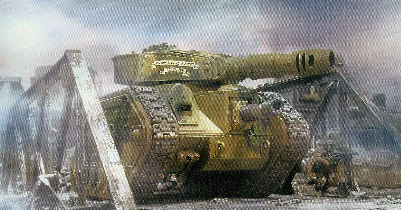

Hailing from the planet Fengorn a gas giant with a web of hydrogen collectors and floating cloud cities far above. The Fengorn Mobile Infantry contributes hundreds of regiments to the Imperium of Man based on their famed abilities in ambush combat in urban settings. The nature of their homeworld also leads them to being particularly adept at void warfare. Long ago; nearly five thousand years ago, the Fengorn Republic had rebelled against the Imperium of Man and attempted to overthrow the sitting Imperial regent of the planet. A bloody war lasting over two hundred years took place between the Fengorn Republic successionists and loyalists. The bloodiest of fighting took place amongst the Southern Cloud Cities, two square kilometers of cities floating high in the atmosphere saw the most manpower and materials poured in. It was here that the Fengorn 1st Mobile Infantry Regiment made a name for themselves; breaching the outer walls of the cities domelike structures and attacking successionist infantry from multiple angles. When the war had been won and Fengorn's Mobile Infantry taken the capital city "Chartaris I" there was not much left to offer to the Imperial Tithe beyond the limited hydrogen extractors and the massed amounts of military personel left over from the Fengorn civil war. Across the Imperium The Fengorn 1st, 2nd, and 3rd Mobile Infantry would be famed for their incredible skill in urban and void combat. Winning the day on the planet Ultak against the Chaos Lord S'Kyrnak Manflayer and participating in the Sabat Worlds Crusades. The Fengorn 23rd Mobile Infantry gave their lives entirely on the planet of Cadia when it fell. A notable campaign where the Fengorn Mobile Infantry was misused was in the fabled Mundigura Jungle Wars. Caught entirely out of their element the Fengorn Mobile Infantry fought in bloody after bloody patrol and ambush against the heretical Mundiguran Jungle Fighters.

It is no surprise that given the nature of their origin, that the Fengorn Mobile Infantry fights in geurilla style combat when the conditions are ideal. Utilizing well placed ambushes and artillery pieces. Fengorn infantry makes great use of grenade launchers and flamethrowers to help sow as much shock and surprise in their opponent before darting off deeper into the rubble to be followed by another ambush. When conditions are most favorable, the Fengorn Mobile Infantry will rush forward in armored personel carriers and carry a fight against an enemy from as many angles as possible. Forward elements of the Mobile Infantry will be made up of the most senior and experienced soldiers who will quickly breach walls of enemy strongpoints and scout out places to establish their own. Many a commander has found themselves facing the Fengorn Mobile Infantry and thought of them as a purely defensive force only to be met with a swift and overwhelming infantry attack.
That being said, when conditions are the least ideal they could be and The Fengorn Mobile Infantry is truly having a bad day, they return to their roots and set every street and every alleyway to be a killzone. Ten man, five man, and sometimes even two man fireteams will attempt to trade as many lives up as possible; picking out elite forces and heavy vehicles. Setting entire buildings up to blow the moment an enemy may enter, or even setting city blocks ablaze in the heaviest fights to throw their opponent off in a last ditch effort. This type of fighting could be described as almost pugilistic in nature. Looking like an army wide bar fight over a strategic push and pull. When it gets tough; the Fengorn Mobile Infantry plays David and Goliath. It is no surprise then that amongst the galaxy the Fengorn Mobile Infantry is in high demand- unfortunately losing many straight up fights where they are misused, but when placed in their ideal warzone there can be few equal.
Over time, the Fengorn Mobile Infantry has begun to incorporate Lemun Russ and even the older Macharius tanks into their forces, giving them a bit more of a punch in their advances; much use has been made with the Hellhound flamethrower tank in an urban setting. It stands the test of time, however, that The Fengorn Mobile Infantry remains as it originates... a force of plucky and technologically adept geurilla fighters who remain adept at close and personal fighting; in space and in the rubble.

The first three original regiments sent out post Fengorn revolution were notable for their veterancy. These men sent out into the stars were veterans of the revolution and gave the Fengorn Mobile Infantry a reputation for being scrappy and technologically adept. These soliders managed to survive tens of hundreds of campaigns collectively and moreso have been given the honor of being regiments personally renewed by the Fengorn government. If the I, II, III regiments would ever be entirely wiped out in a combat action then the regiments themselves would be refreshed and redeployed in honor of the Fengorn fighting spirit.
The 1st Fengorn Mobile Infantry is notable for the Fengorn Wardogs, a group of Imperial Stormtroopers who are equipped near identically to the Cadian Kasrkin, the Fengorn Wardogs fight urban geurilla operations in a way that could only be called a 'Symphony of destruction'. A favored tactic of the Fengorn Mobile Infantry is to blow buildings up to throw off enemy troops in an urban warzone, in the chaos of such an action, the Mobile Infantry is right at home, where the enemy themselves may be thrown off. The Fengorn Wardogs have perfected this tactic even giving each of their squads a designated demolitions expert. The Fengorn 1st has been operating all across Segmentum Obscurus' backwater planets in attempt to vanguard the region after the fall of Cadia. The fighting itself has been incredibly harrowing and long with the regiment operating on platoon level deployments across the Segmentum. Wherever the Fengorn Wardogs may be found, the heart of the Imperium still lives.
This regiment partook in the urban campaign on Patrician IX, during the reconquest of Neo Arcadia its capital city. More to be written over the course of the campaign.